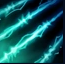

- Riot Games
- O jogo
- Thresh
- habilidades

Passiva
Condenação
Thresh pode colher a alma de inimigos que morrerem perto dele, recebendo Armadura e Poder de Habilidade permanentemente.
Q
Sentença
Thresh prende um inimigo em suas correntes e puxa em sua direção. Ativar essa habilidade uma segunda vez puxa Thresh em direção ao inimigo.
W
Passagem Sombria
Thresh arremessa uma lanterna que protege Campeões aliados próximos contra danos. Aliados podem clicar na lanterna para avançar na direção de Thresh.

E
Esfolar
Os ataques de Thresh são fortalecidos, causando mais dano quanto mais tempo ele esperar entre ataques. Ao ativar, Thresh arrasta sua corrente e empurra todos os inimigos atingidos na direção do golpe.

R
A Caixa
Uma prisão de paredes que causam dano e Lentidão se quebradas.